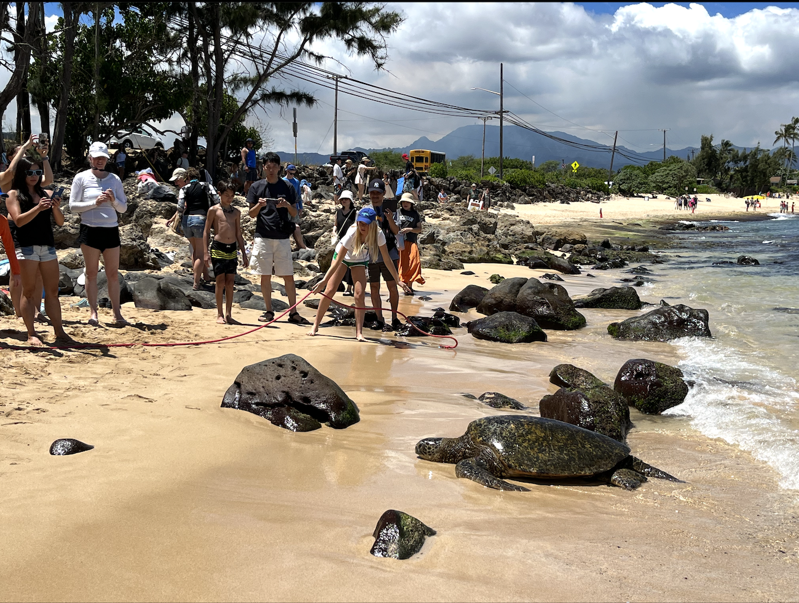

Using ML to Save my Hometown Sea Turtles
Developing a Predictive Model for Sea Turtle Sexing in the Pursuit of Wildlife Conservation
Backstory + Problem Discovery
I have volunteered for the non-profit, Mālama I Nā Honu, for eight years. This organization is dedicated to the conservation of the Hawaiian Green Sea Turtle. At first, my assistance to this cause was solely hands-on: I aided in turtle medical assistance, spoke at educational initiatives to crowds of hundreds, and worked in the field to collect and analyze basking data.
Then I noticed a recurring problem: Deciding a living turtle’s sex by eye is hard. Their reproductive organs are internal, researchers often observe from a great distance, and the practice has historically relied on passed down tips and tricks without concrete metrics to differentiate.

Why Sexing Data?
Aside from general population data, accurate sexing is the first step in identifying individuals. Researchers sort by sex and age, then match facial scale patterns and scars. A wrong call early on makes every later match harder.
Knowing which measurements actually carry a reliable signal for sex in a specific species allows researchers to collect data both more accurately, and more efficiently.
Better data improves conservation efforts, and more efficient collection will mean limited conservation funds do more.
“Breeze was able to take the project past pure engineering to turn her observations into a useful product for a good cause.”
Philanthropic supervisor
The Product
I developed a machine learning prototype that predicts sea turtle sex from physical measurements and investigates which characteristics offer the most useful evidence for classification.
Much of the work involved making inconsistently recorded existing data sets usable. I built a preprocessing pipeline to standardize measurements, handle missing values, and convert text entries into numerical features. I then developed and compared four classifiers, including a Multilayer Perceptron Neural Network.
The strongest model achieved 95.9% accuracy on the project’s test set. Beyond classification, the analysis revealed that relationships between certain measurements and sex varied across weight categories. This suggested that the usefulness of familiar identification cues, such as tail length, depends partly on the size of the animal being assessed.
I presented the results to a panel of conservation scientists as an actionable MVP that could help researchers prioritize informative measurements and estimate sex when records are incomplete.
Reflection
My engineering skills and product development knowledge, combined with my unique experiences, help me identify inconspicuous ways to harness new technology. I try to take this approach through all my problem solving endeavors. All in all, I continually find that where there’s data, there’s something innovative that can be made.